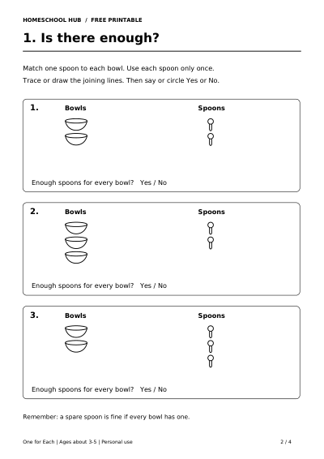

Free printable
One for Each: Is There Enough?
Ages about 3–5
Match one spoon to each bowl and find out whether every bowl can have one. Practise one-to-one matching, spotting a missing item and noticing a spare.
Four A4 pages include a parent model, six picture activities and answers. The pictures use up to four bowls and four spoons.
Try 5–10 minutes with an adult reading aloud. Print pages 2–3 in black and white. Trace joining lines with a finger or use a pencil. Children can point and answer aloud; counting to four is helpful but matching is the goal.
Give each bowl one spoon and use each spoon only once. A spare spoon still means there are enough. Different joining lines can be correct, even if they cross.
Explore small quantities in Subitising to 5 or practise counting with Numbers 1–10.
